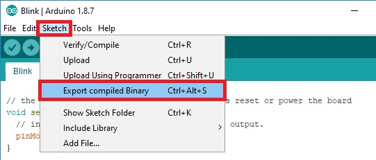
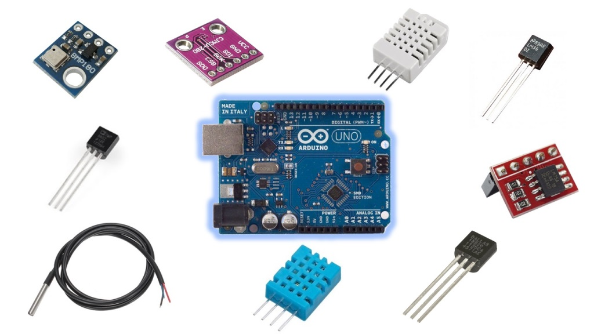
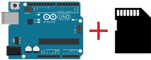
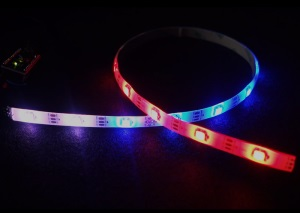
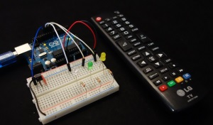

Arduino Projects
The Arduino is a microcontroller board that you can program to read information from the world around you and to send commands to the outside world (inputs and outputs).
1.What is Arduino ?

2. How to Create .bin (binary) Files from Sketch on Arduino IDE

3. Arduino Compatible Temperature Sensors for Your Electronics Projects

4. Guide to SD Card Module with Arduino

(Exemplo)Guide for WS2812B Addressable RGB LED Strip

(Exemplo)Arduino Time Attendance System with RFID
more examples >>>